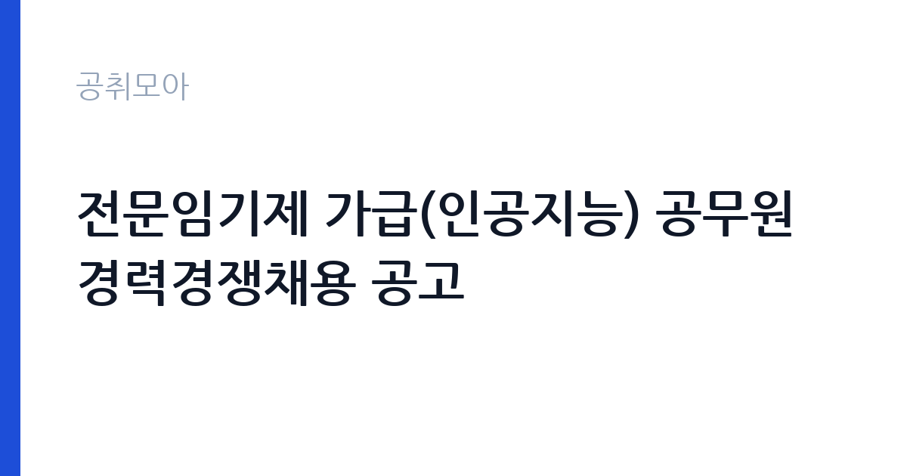

[국가기관] 전문임기제 가급(인공지능) 공무원 경력경쟁채용 공고
고용노동부 · 세종 · 마감 2026-10-30 (D-11) · 출처 나라일터

한눈에 보는 모집 조건
| 기관 | 고용노동부 |
|---|---|
| 공고명 | 전문임기제 가급(인공지능) 공무원 경력경쟁채용 공고 |
| 고용형태 | 임기제 |
| 근무지 | 세종 |
| 게시일 | 2026-10-19 |
| 마감일 | 2026-10-30 (D-11) |
지원자격, 이렇게 읽으세요
- 전문임기제 가급 1명
- 접수 ~2026-10-30 마감
- 세부 조건은 원문 공고문 확인
전문임기제공무원은 특정 분야의 전문성을 활용하기 위해 임용하는 공무원으로, 일반 공무원과 달리 계약 기간이 정해져 있습니다. 이번 공고의 모집분야는 AI 전환에 따른 일자리정책 대응이고, 선발직급은 전문임기제 가급으로 4.5급 상당입니다. 자격요건은 경력과 학위로 제시돼 있습니다. 세부 기준, 즉 학위 수준과 경력 연수는 공고문에 명시돼 있으므로 원문을 확인해야 합니다. 접수 방법이 등기우편이라는 점이 중요합니다. 세종시 한누리대로 422 정부세종청사 11동 고용노동부 6층 운영지원과 인사계로 보내야 하며, 마감일 도착 기준으로 판단될 가능성이 큽니다. 접수 기간도 10월 28일부터 30일까지 사흘뿐이라 일정 관리가 관건입니다.
이 공고의 포인트
이 자리의 핵심은 두 가지입니다. 첫째, AI 정책을 정부 부처 한가운데서 다룬다는 점입니다. 고용노동부는 일자리 정책을 총괄하는 부처라, AI가 노동시장에 미치는 영향을 정책으로 연결하는 업무를 직접 맡게 됩니다. 둘째, 4.5급 상당의 전문임기제라는 직급입니다. 일반 사무직보다 처우가 높고, 전문성으로 진입하는 자리입니다. 대신 계약 기간이 정해져 있어, 안정성보다 경력의 확장을 노리는 지원자에게 맞습니다. 세종 청사 근무라는 점도 고려해야 합니다. 수도권 거주자라면 이사나 통근 계획을 먼저 세워야 합니다.
전형은 어떻게 진행되나
전형은 서류전형과 면접전형으로 진행됩니다. 서류에서는 학위와 경력이 모집분야와 얼마나 직접적으로 연결되는지를 봅니다. AI 정책, 노동시장 분석, 디지털 전환 관련 경력이 있으면 유리합니다. 면접에서는 정책 이해도와 실제 수행 계획을 확인합니다. 전문임기제는 업무계획서나 직무수행계획서를 요구하는 경우가 많으므로, 공고문의 제출서류 목록을 먼저 확인하십시오. 접수 기간이 사흘로 짧고 등기우편만 인정되므로, 우편 도착일에 맞춰 준비 일정을 역산해야 합니다. 마감 후에는 서류 합격자 발표와 면접 일정이 개별 통보됩니다.
원문에서 확인한 전형 방식
○ 모집분야 : AI 전환에 따른 일자리정책 대응 ○ 선발직급 : 전문임기제 가급(4.5급 상당) ○ 고용형태 : 임기제 ○ 자격요건 : 경력, 학위 ○ 접수기간 : 2026년 10월 28일 ~ 2026년 10월 30일 ○ 응시방법 : 등기우편 접수(세종시 한누리대로 422 정부세종청사 11동 고용노동부 6층 운영지원과 인사계 채용담당) ○ 문의처 : 044-202-7861
이런 분께 추천해요
- AI·디지털 전환과 노동시장 정책을 연결해본 경력이 있는 분
- 학위와 경력 요건을 갖춘 전문가로 공직에서 정책을 수행하고 싶은 분
- 세종 청사 근무가 가능한 분 — 접수는 등기우편만 가능합니다
지원 전 체크리스트
- 공고문의 학위·경력 요건을 충족하는가 — 본문에는 경력·학위로만 표시돼 있습니다
- 업무계획서 등 추가 제출서류가 있는지 확인했는가
- 등기우편 도착 기준 마감(2026-10-30)에 맞춰 발송 일정을 잡았는가
- 세종 근무와 계약 기간 조건을 받아들일 수 있는가
모집 일정과 제출 타이밍
마감은 2026년 10월 30일이고, 접수는 10월 28일부터 30일까지 사흘간입니다. 등기우편만 인정되므로 사실상 10월 27일까지 발송을 마쳐야 안전합니다. 권장 일정은 즉시 공고문을 내려받아 제출서류를 확정하고, 이틀 안에 자기소개서와 직무수행계획서를 완성하는 것입니다. 10월 27일 오전에 등기로 발송하고, 도착 확인을 위해 우체국 접수증을 보관하십시오. 면접은 서류 합격자에게 개별 통보되며, 전문임기제 면접은 발표와 질의응답 형식을 취하는 경우가 있습니다.
직무 이해하기: 국가기관
고용노동부의 AI 전환 대응 업무는 인공지능 확산이 고용에 미치는 영향을 분석하고 정책 대안을 만드는 일입니다. 전문임기제 가급은 이 업무를 전담하는 전문가로, 부처 내 관련 부서와 협업합니다. 구체적으로는 AI 도입에 따른 직업별 고용 변화 분석, 재교육·직업훈련 정책 설계, 관련 연구 용역 관리, 대외 협력과 정책 보고서 작성 등이 핵심입니다. 단순히 기술 동향을 정리하는 것이 아니라, 노동시장 데이터를 다뤄 정책 언어로 바꾸는 능력이 필요합니다. 부처 특성상 이해관계자 협의가 많고, 문서 작성과 보고의 비중이 높습니다.
자기소개서 작성 팁
전문임기제 지원서는 전문가로서의 이력이 중심입니다. 첫 문단에 본인의 전문 영역과 이 공고의 모집분야가 어떻게 맞물리는지 한 문장으로 제시하십시오. 본론은 연구·정책 경험을 구체적으로 서술합니다. 수행한 프로젝트, 사용한 데이터, 도출한 결론, 정책 반영 여부를 순서대로 쓰십시오. AI와 노동시장을 연결한 경험이 없다면, 데이터 분석이나 정책 평가 경험을 통해 같은 역량을 보여주는 방식으로 접근하십시오. 마무리에는 임기 동안 달성할 목표를 수치로 제시하면 좋습니다. 계약 기간이 정해진 자리이므로, 단기간에 무엇을 남길 수 있는지가 평가의 핵심입니다.
면접 준비 포인트
면접은 정책 발표와 질의응답으로 구성될 가능성이 큽니다. 준비할 것은 세 가지입니다. 첫째, AI가 국내 고용에 미치는 영향에 대한 본인의 진단. 둘째, 그에 대한 정책 대안. 셋째, 자신이 그 대안을 수행할 수 있는 근거입니다. 질문이 들어오면 결론부터 말하고 근거 데이터를 붙이십시오. 정책 면접에서는 현실성과 실행 가능성을 중요하게 봅니다. 예산과 제도, 이해관계자 변수를 함께 언급하면 전문성이 드러납니다. 모르는 통계는 추정하지 말고 확인이 필요하다고 답하는 편이 안전합니다.
급여·근무조건 읽는 법
전문임기제공무원의 보수는 공무원보수규정에 따라 정해집니다. 가급은 4.5급 상당으로 분류되고, 연봉한계액이 적용되는 전문임기제 직급입니다. 구체적인 연봉은 경력과 직무 특성을 반영해 결정되며, 원문 공고문의 처우 조건에서 확인해야 합니다. 전문임기제는 일반 공무원과 달리 성과급이나 수당 체계가 일부 다르게 적용될 수 있습니다. 계약 기간이 정해져 있고, 근무실적에 따라 재계약 여부가 결정됩니다. 4대 보험과 퇴직급여는 공무원 신분에 맞는 방식으로 처리됩니다. 연봉 협의가 있는 경우가 있으므로, 면접 단계에서 처우 관련 안내를 확인하십시오.
자주 묻는 질문
- 계약 기간이 정해져 있나요?
전문임기제공무원은 임용 기간이 정해진 공무원입니다. 구체적인 임용 기간과 재계약 조건은 원문 공고문에 명시돼 있으니 확인하십시오. - 접수는 어떻게 하나요?
등기우편만 가능합니다. 세종시 한누리대로 422 정부세종청사 11동 고용노동부 6층 운영지원과 인사계로 보내야 하며, 접수 기간은 10월 28일부터 30일까지입니다. - 경력 요건은 어떻게 되나요?
공고에 자격요건이 경력과 학위로 표시돼 있습니다. 구체적인 학위 수준과 경력 연수는 첨부 공고문에서 확인하십시오.
함께 보면 좋은 공고
[국가기관] 2026년 제5회 국립부곡병원 의무직 공무원 경력경쟁채용시험 공고 — 마감 2026-10-30[국가기관] 한국체육대학교 대학회계무기직원(미화원, 1명) 채용 공고 — 마감 2026-10-30[국가기관] 2026년 수도권대기환경청 기간제근로자 채용 공고 — 마감 2026-10-28출처: 나라일터 공개정보를 바탕으로 공취모아가 정리한 안내글입니다. 모집 조건·일정은 변경될 수 있으니 지원 전 반드시 원문 공고문을 확인하세요. 본 글은 정보 제공용이며 합격을 보장하지 않습니다.